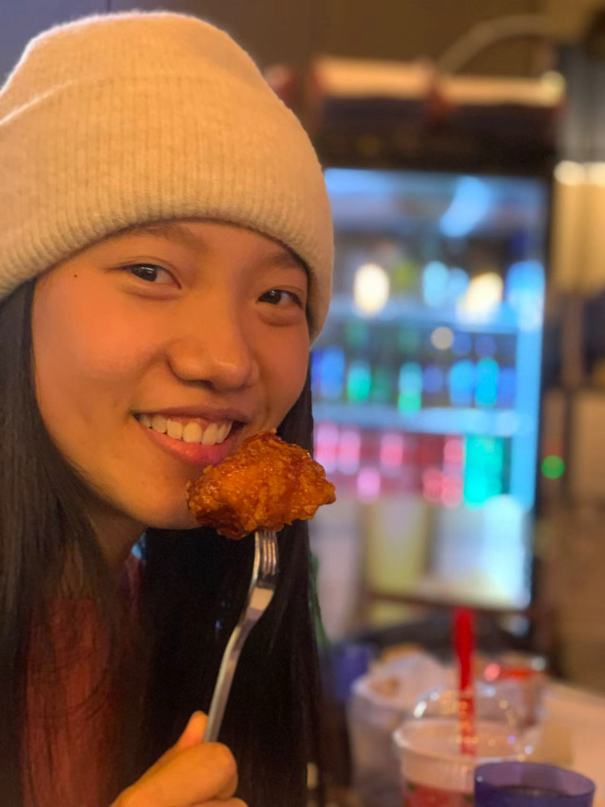
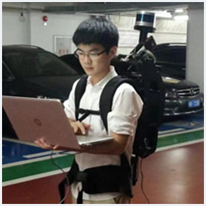
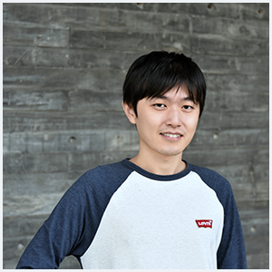
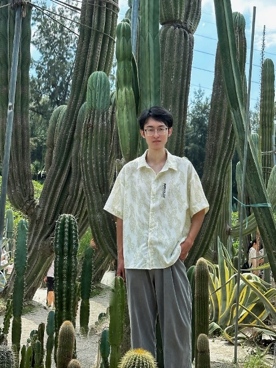

教育经历
- 国防科技大学 电子科学学院 工学博士(2005.09 – 2011.12)
- 香港中文大学 计算机科学系 联合博士(2005.09 – 2011.01)
- 国防科技大学 电子科学学院 工学学士(2001.09 – 2005.06)
Introduction
陈一平教授领衔的“三维时空智能实验室”（3D Spatiotemporal AI Lab）隶属于中山大学遥感科学与技术学院，坐落于广东珠海。实验室面向激光雷达遥感与智能三维点云理解的前沿需求，聚焦三维点云表征学习、遥感要素提取、三维场景生成与点云时空大模型等关键技术研究，并探索其在实景三维与数字孪生、城市与森林精细化测绘、生态环境可持续发展等领域的应用。
课题组致力于多平台、多源传感数据融合，构建稳健可泛化的三维场景理解方法与工程化流程。实验室负责人陈一平教授入选国家级青年人才，共有副教授2人，博士后2人，博硕士研究生11人，本科生8人。近年来实验室在ISPRS JPRS、CVPR、JAG、IEEE TGRS等顶刊与顶会发表100余篇高水平论文，并主持或承担国家自然科学基金面上/青年项目，部委基金/预研项目，与广东省面上项目等十余项科研项目，授权国家发明专利20余项。
团队成员获中国遥感应用协会青年女科学家奖特等奖，中国测绘学会测绘科学技术奖二等奖，中国地理信息产业协会科技进步奖一等奖，北京市技术发明一等奖等奖励。实验室与加拿大滑铁卢大学、挪威科技大学、香港大学等高校保持密切国际合作，毕业生均入职一线科技企业与遥感测绘相关政府单位，或在国际顶尖高校深造。
Professors
Associate Professors
主要从事时空数据分析与地理大数据研究，重点关注自然地理条件对城市空间结构、交通运行、环境暴露与城市发展路径的影响；同时，也开展遥感跨模态分析研究，聚焦小目标识别、多时相变化的语义理解与跨模态检索。在Nature cities, TGRS, Building and Environment 等期刊上发表SCI论文30余篇。
研究兴趣包括城市环境计算与感知、空间可达性建模与公共资源优化、人地交互的空间关联与因果分析等方向。主持国家自然科学基金、广东省自然科学基金、国家重点研发计划子课题等多项科研项目。在国内外主流期刊发表学术论文30余篇，其中以第一作者或通讯作者身份在IJGIS, CEUS, IG等期刊发表论文20余篇。长期担任IJGIS, TGIS, SCS, TITS等多个国际期刊审稿人。
Postdoctoral Researchers
PhD Students
方向：点云交互式分割
方向：激光雷达点云智能解译
方向：三维重建与生成
方向：无人机具身智能
方向：生态智能感知与建模
Master Students
方向：三维重建与生成
方向：低空经济
方向：城市变化检测
Bachelor Students
Visitors
访问博士生，香港大学博士生

访问硕士生，澳门科技大学硕士生
Graduates
2018级博士生
深圳大学建筑与城市规划学院博士后
2018级博士生
贵州师范大学大数据与计算机科学学院副教授

2018级博士生
闽南师范大学计算机学院副教授

2015级博士生
深圳大学计算机与软件学院副研究员

2021级硕士生
香港科技大学（广州）博士生
2021级硕士生
广东省佛山市南海区交通运输局
2021级博士生
西华大学计算机与软件工程学院 硕士生导师
2023级硕士生